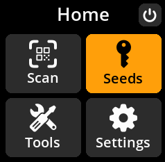
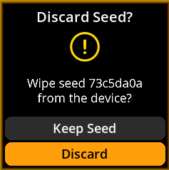
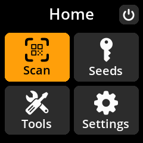

Discard Loaded Seed¶
Safely remove the current seed from memory when you’re finished with your operations.
Complete Step-by-Step Process with All Screenshots¶
Navigate:
Home → Seeds → [Select Seed] → Discard Seed



Confirm Discard: Select “Discard” to remove the seed from memory

Return to Main Menu: You’ll be returned to the main menu with no seed loaded

🧹 Memory Clearing: Discarding a seed completely removes it from device memory. This is a security best practice when switching between different seeds or when finished with operations.